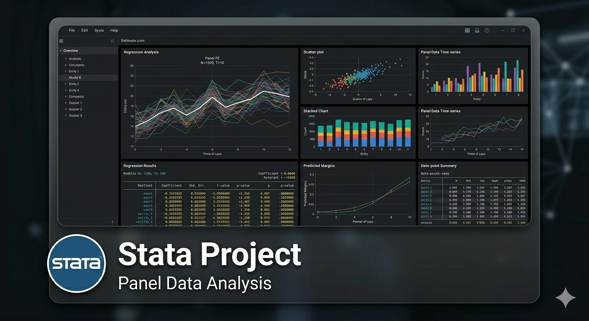
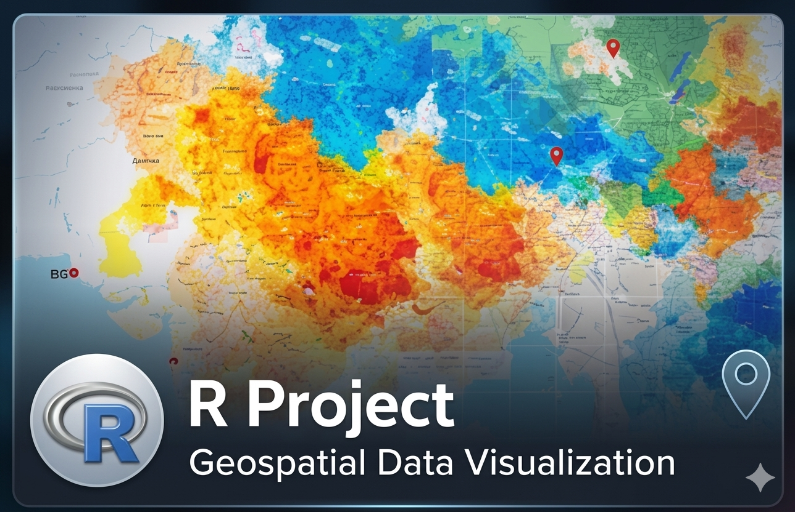
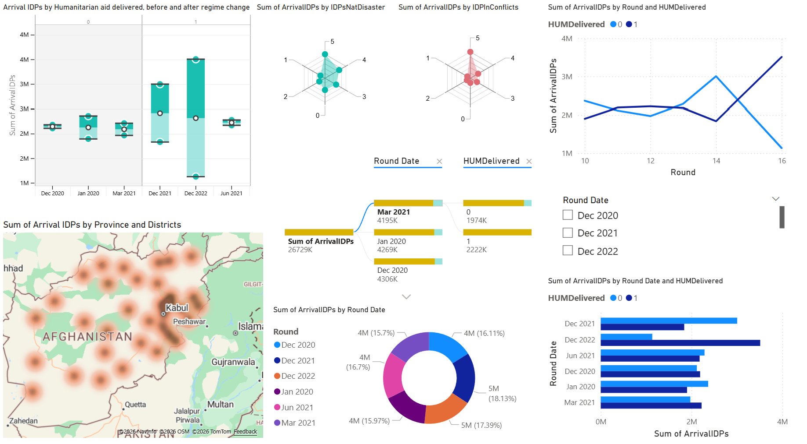
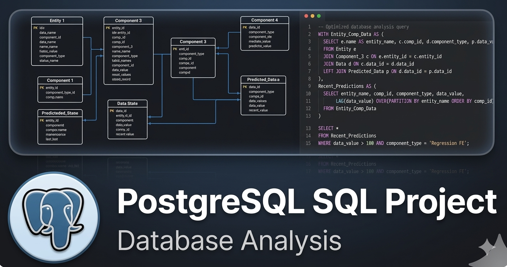

Development Economics graduate specialized in econometrics, research, data analytics, transforming complex data into decisions that matter.
About Me
I am a Development Economics graduate from the University of Göttingen and the University of Florence, with strong experience in data analysis, econometrics, and research. I have worked with large datasets, built dashboards, and conducted quantitative analysis using tools such as Stata, R, Power BI, and SQL.
My work focuses on transforming complex datasets into insights that support policy analysis, development research, and organizational decision-making. Whether mapping displacement patterns across districts, building interactive Power BI dashboards, or running fixed-effects regression models, I bring rigor and clarity to every project.
I am passionate about using data as a tool for understanding real-world challenges — particularly in contexts of development, displacement, and humanitarian action.
Projects
Econometrics, geospatial mapping, BI dashboards, and SQL analysis.

Analyzed panel data related to internal displacement and humanitarian aid. Conducted econometric analysis using fixed effects and regression models. Cleaned large datasets and produced statistical outputs for research reporting.

Mapped IDPs per district, school and clinic locations, security situations, and population density using R. Designed to support displacement and infrastructure analysis with rich layered cartographic outputs.

Visualizes internal displacement patterns and humanitarian aid using real-world IOM data. Features arrival IDPs by province, district, and round date — with dynamic filters, KPIs, and geospatial visuals.

Used SQL queries to analyze relational databases. Implemented joins, aggregations, and subqueries to extract insights from structured datasets and support reporting workflows with a focus on clean query optimization.
Skills
Statistical modeling, econometrics, large dataset management and rigorous data quality checks.
Interactive dashboards, KPIs, and compelling visual communication of complex data findings.
Query engineering, scripting, and reproducible research document production.
District-level mapping, infrastructure location analysis, and cartographic visualization.
Data cleaning pipelines, quality control, and large-scale structured dataset management.
Native Pashto speaker with professional proficiency across five languages.
Contact
Open to data analyst roles, research collaborations, and consulting in development economics, humanitarian data, and policy research.